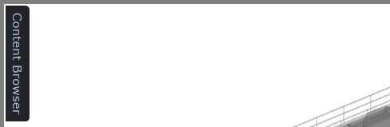
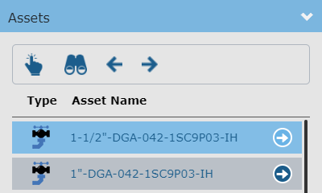
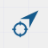

内容浏览器
Knowledge Book内容浏览器允许您浏览知识视图的资产内容。内容浏览器将仅显示属于知识视图一部分的资产。

单击Knowledge Book查看器左上角的“内容浏览器”选项卡可以显示内容浏览器。再次单击“内容浏览器”选项卡可隐藏内容浏览器。
内容浏览器由 3 个主要面板组成：
当前资产位置

表示内容浏览器中的当前资产位置。该面板包含一个层次结构控件，您可以通过单击当前资源的父项之一来更改资源位置。
通过“搜索资产”文本框，您可以按当前资产位置中/下的名称搜索资产。输入搜索字符串。这将填充名称包含搜索字符串的资产列表。该列表还显示了层次结构中的资产位置。单击列表中所需的资产以在资产内容浏览器中选择它。您现在可以通过资源工具栏在查看器中找到该资源。搜索资产功能目前不支持按名称搜索标记点。

资产内容

列出紧邻当前资产位置下的资产。
在资产列表中，单击 |
| 更改资产位置并在新资产位置下列出资产。 |

要选择资产，请单击资产名称或图标。将启用资产工具栏命令。资产工具栏命令作用于选定的资产。
资产工具栏提供以下功能：
| 在查看器中选择选定的资产。 |
| 缩放至所选资产的边界（范围）。 |
返回到资产层次结构中之前访问过的资产级别。 | |
| 前进到资产层次结构中的下一个访问的资产级别。仅当您之前使用过后退按钮时，此命令才可用。 |


标记点内容

列出当前资产位置下的所有标记点。卡片视图中的标记点卡包含标记点类型、名称和标题。
要选择标记点，请单击该标记点。将启用标记点工具栏命令。标记点工具栏命令作用于选定的标记点。
标记点工具栏命令
标记点工具栏提供以下命令：
| 在查看器中选取选定的标记点。 |
| 缩放至所选标记点的边界（范围）。 |
扫描内容

列出知识视图中资产范围内的所有扫描。
默认情况下，扫描件不会显示在查看器中。扫描的显示可以在显示管理器中切换。 |
要选择扫描，请单击该扫描。将启用扫描工具栏命令并显示扫描快速信息。扫描工具栏命令作用于选定的扫描。
扫描工具栏命令
扫描工具栏提供以下命令：
| 缩放至所选扫描的边界（范围）。 |
 | 将相机与扫描的位置和方向对齐。 |